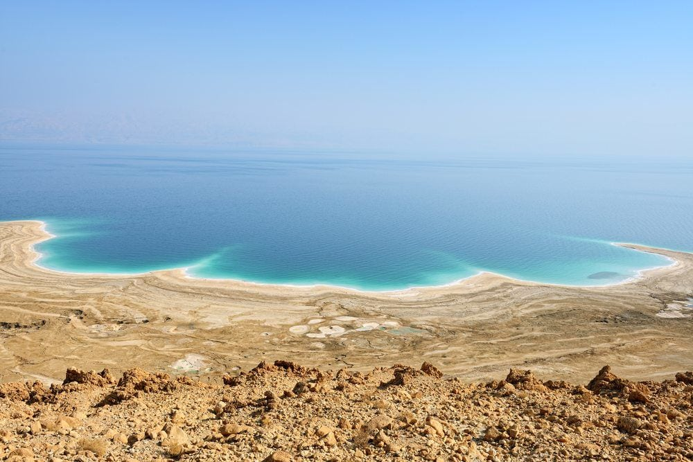

Rosh HaNikra

Rosh Hanikra is Israel's northern-most attraction. The ocean eroded away at the walls in the caves, creating beautiful scenery.
Haifa
Haifa is one of the northern-most cities in Israel. Haifa is Israel's largest trading port, as it is located on the water. One of Haifa's main attractins is the Bahai Gardens.
Tel Aviv

Known as the "Miami of the Middle East", Tel Aviv is a great place or tourists to find night life in Israel. There are also several historic attractions, such as the Holocaust Museum
Jerusalem
Jerusalem is the holiest city in Israel. It is sacred to three religins, Judaism, Christianity, and Islam. There are many historic attractions to see throughout Jerusalem, including the Western Wall and the Temple of the Dome.
Dead Sea
The Dead Sea is the lowest place on Earth. It is an extremely salty lake that is popular among tourists. People from all over the world come to The Dead Sea to float and bathe themselves in the nutrient-rich clay.